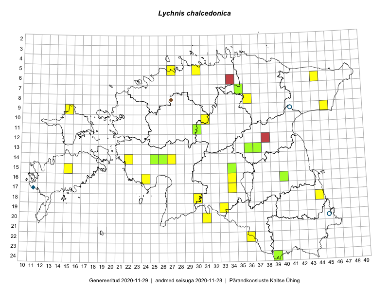

Lychnis chalcedonica
Uuendatud: 2016-12-01
Kaardile koondatud taksonid: Lychnis chalcedonica L.

Kaart põhineb 16 kirjel.
Viited andmebaasikirjetele
- Peedu Saar, Liina Oja: 2015-07-21: 06-44: GPS punkt
- Peedu Saar, Liina Oja: 2015-07-21: 06-44: GPS punkt
- Peedu Saar, Liina Oja: 2015-07-24: 09-45: GPS punkt
- Peedu Saar: 2015-07-04: 18-44: GPS punkt
- Ott Luuk, Peedu Saar: 2015-09-04: 05-30: GPS punkt
- Ott Luuk, Toivo Sepp: 2015-07-12: 10-31: GPS punkt
- Maret Gerz, Leena Gerz: 2015-08-09: 16-24: GPS punkt
- Karin Kikas, Elle Rajandu: 2015-07-23: 15-15: GPS punkt
- Eeva-Maria Jeletsky, Tarmo Niitla: 2016-07-13: 09-15: GPS punkt
- Ott Luuk: 2016-08-11: 08-36: GPS punkt
- Liina Oja, Elle Rajandu: 2016-07-18: 19-33: GPS punkt
- Timo Luhamäe, Peedu Saar: 2016-07-08: 14-27: GPS punkt
- Mari Reitalu, Oliver Parrest: 2016-07-04: 14-22: GPS punkt
- Meeli Mesipuu, Toivo Sepp, Susanna Vain: 2016-07-20: 17-34: GPS punkt
- Meeli Mesipuu, Mari Metsoja: 2016-07-19: 20-31: GPS punkt
- Mari Metsoja, Meeli Mesipuu: 2016-07-19: 20-31: ala